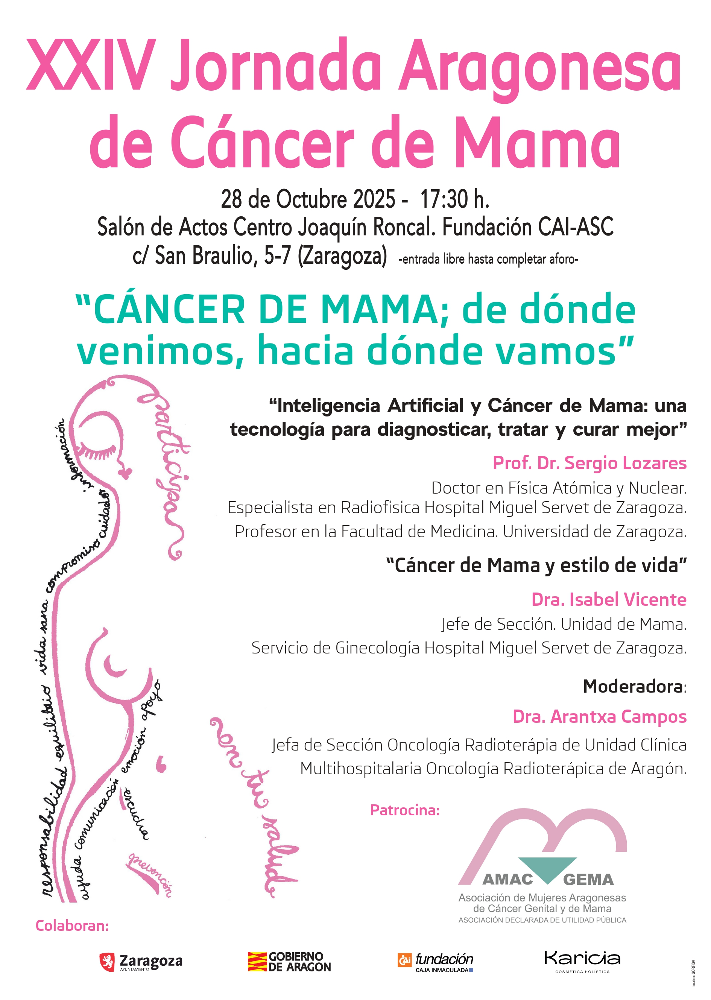

Divulgación y Encuentros
Volver a ProyectosJornada Aragonesas de Cáncer de Mama
Encuentros anuales para acercar conocimiento, conversación y voces expertas a la sociedad.

Sobre las Jornadas
Las jornadas de cáncer de mama organizadas por AMAC-GEMA se han consolidado a lo largo de su trayectoria como un referente de divulgación en Aragón. Su objetivo principal es abordar de forma integral los avances médicos, la investigación, el impacto emocional y los estilos de vida, sirviendo como punto de encuentro entre especialistas, pacientes y familiares.
Colaboran:
Ayuntamiento de Zaragoza, Gobierno de Aragón, Fundación CAI, Karicia
Última Edición (2026): Aspectos Destacados
- Lema central: XXIV Edición “Cáncer de mama; de dónde venimos, hacia dónde vamos”.
- Fecha y Hora: 28 de octubre de 2025 a las 17:30 h.
Ponencias y Participantes
Inteligencia Artificial y Cáncer de Mama: Una tecnología para diagnosticar, tratar y curar mejor, impartida por el Prof. Dr. Sergio Lozares (Doctor en Física Atómica y Nuclear, especialista en Radiofísica y profesor en la Universidad de Zaragoza).
Cáncer de Mama y estilo de vida: Impartida por la Dra. Isabel Vicente (Jefa de Sección de la Unidad de Mama del Servicio de Ginecología del Hospital Miguel Servet).
Modera: Dra. Arantxa Campos (Jefa de Sección de Oncología Radioterápica de la UCMORA).